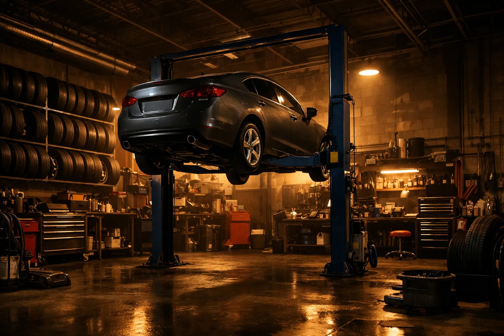

Garage automobile et magasin de pneus à Etterbeek depuis 2004.
Ali-Ka a ouvert ses portes en 2004 à l'Avenue des Casernes 10, au coeur d'Etterbeek. Depuis plus de 22 ans, notre garage familial offre un service de proximité aux automobilistes d'Etterbeek, d'Ixelles, de Schaerbeek et de l'ensemble de la région bruxelloise.
Ce qui a commencé comme un petit atelier spécialisé en pneus est devenu un garage complet, capable de prendre en charge la mécanique courante, la vidange, les freins, le diagnostic moteur, l'échappement, la climatisation et la préparation au contrôle technique.
Noté 4,6 sur 5 sur Google avec 18 avis. Nos clients reviennent année après année parce qu'ils savent qu'Ali-Ka ne recommande que les interventions nécessaires.
À deux pas du Parc du Cinquantenaire et de la Place Jourdan. Un garage de quartier qui connaît ses clients et leurs véhicules.
En moyenne 20 à 30 % moins cher qu'en concession, avec des pièces de qualité équivalente. Devis gratuit au téléphone.
Ali-Ka est avant tout un spécialiste pneus : vente, montage et équilibrage de pneus toutes marques, toutes saisons, pour voitures et utilitaires. Nous proposons également :
Ali-Ka
Avenue des Casernes 10, 1040 Etterbeek, Belgique
BCE : BE 0831.370.766
Téléphone : 02 647 47 01